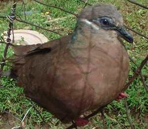

limuken 
/limukɔn/
n.
“fruit_dove”
n.
Phapitreron_leucotis_brevirostris
white-eared brown fruit dove; an omen bird
Wrd.Gloss: fruit_dove
Cult. It has white ears and light brown feathers speckled with black. It is approximately 9 inches long, and eats berries and fruit. It does not fly in flocks and is very tame. Its call is a mournful whistling set of notes: Coo-coo, Coo, Coo, Coo, coo, coo, coo, coo, coo, coo, coo, the pitch going down gradually. To the Matigsalug people, if it calls from the right of the path when one sets out on a journey, it is a good omen. When it calls from the left, it is bad and one should not continue because misfortune or death is awaiting ahead. The most common pigeon kept as a cage bird by lowlanders.
Eng. fruit dove; dove; omen bird; bird variety
Tag. limukin; bato-batong tulog
Ceb. alimúkon; limúkon
OCM: Fauna (136), Avoidance and Taboo (784)
DDP: Bird (1.6.1.2)
Online dict status: -
Usage level: B
1.
v.
for a fruit dove (eglimuken, miglimuken, inlimuken, agent, eg><ø-) to call to someone (eglimukenan, miglimukenan, inlimukenan/piglimukenan, location, eg><an-) to give an omen (iglimuken, iglimukeni, instrument, ig><ø-, ig><i-)
Eglimuken ma ka limuken ke due gipanawan ta su egbehey ma te katagaan ta.
A fruit dove will give a call when we have a trip because it will give us an information about something.
Miglimekenan sikandin ka inhipanew palinneu te meupiya ka hipanawen din.
The bird gave him a good song as a sign of a good journey.
Iyan iglimuken kandin ganna su due nalingawan din te migligkat.
The fruit dove sang to him a while ago because he forgot to bring something.
Eng. sing, (fruit dove); call, to (fruit dove)
Tag. huni; awit
Ceb. tingog
Online dict status: -
Usage level: R
Updated by: RJH,QDL,NJK,NJK
Last updated: 13/Oct/2009
This page last updated: 19/May/2012
Copyright © 2009-2010, Matigsalug Language Christian Association, Inc